芭提雅——不只是旅行，也是生活
如果问你对泰国的印象如何，你的第一印象是什么？恐怕很多人的脑袋里蹦出来的词汇一定是“人妖”“贩毒”“落后”等词汇，其实在我去泰国之前也是这么认为的，但是最近陪朋友去了趟芭提雅之后，彻底改变了对泰国的看法。
芭提雅是泰国发展得很早、很成熟的旅游热点城市。多年前，芭堤雅城市宣传的口号是:“芭堤雅永远不眠,对你而言,她是最好的旅游胜地。”吸引世界各地游客到芭提雅的，就是这里的夜生活。每年赴泰旅游的中国人有400—500万人次，来芭提雅旅游的人数也超过100多万，那现在就随我们一起前往泰国，前往最美的芭提雅吧！
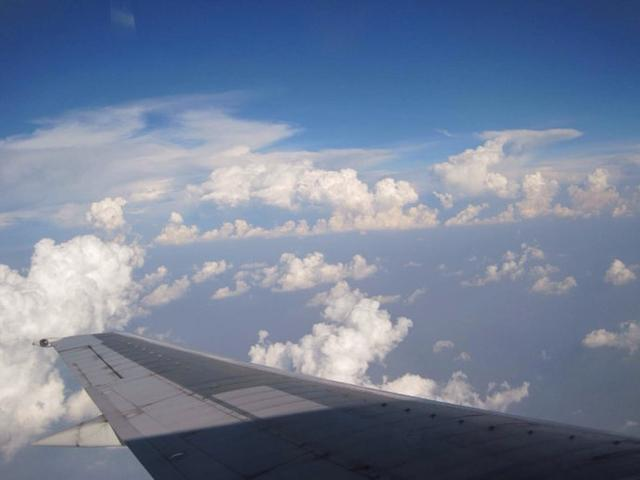去泰国最常见的两种签证，第一种是旅游签，办下来大概10天左右，用某宝大概20块钱。如果办理了泰国签证一定要在三个月内去一次泰国，不然会被永久拒签，所以一定要注意。
另一种是落地签，流程很简单，下飞机填一张单子，可以在泰国停留15天。表格像这样
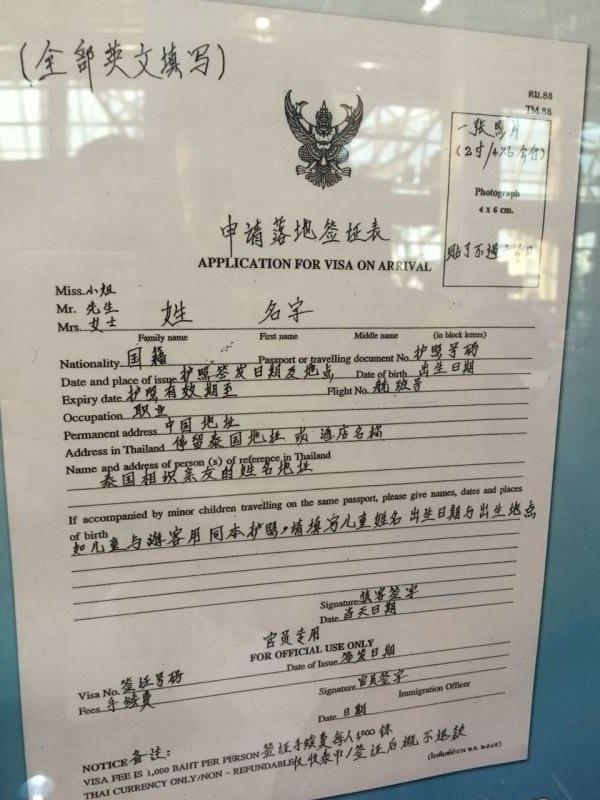马上就出机场了，兴奋！
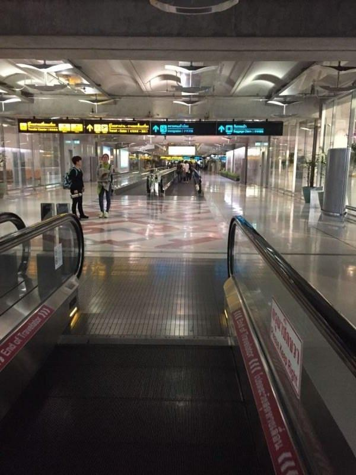出机场坐机场的大巴，即将奔向芭提雅
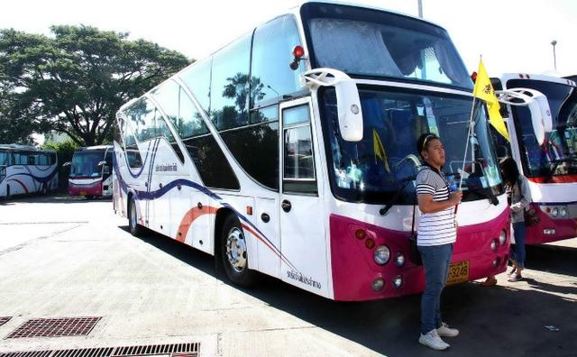到芭提雅已经是下午
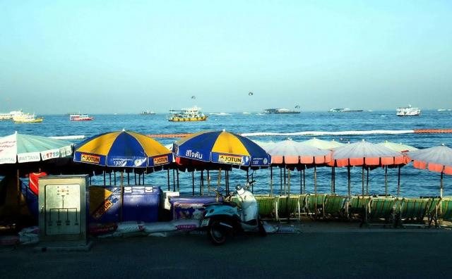晚饭当然要吃点特色了，泰国的消费还真是低，在景区附近也没有天价虾，吃海鲜到饱一顿才3000泰铢，一个字爽！
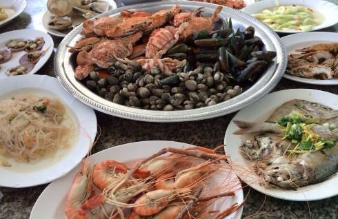 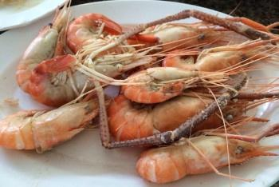 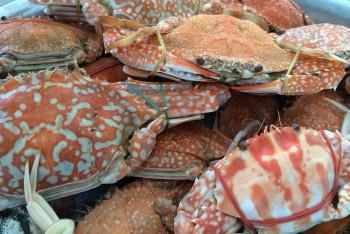入夜，华灯初上的芭提雅才展示它的魅力
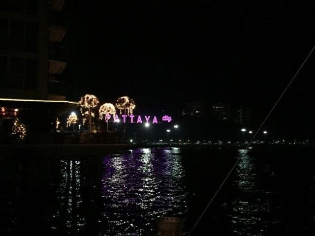 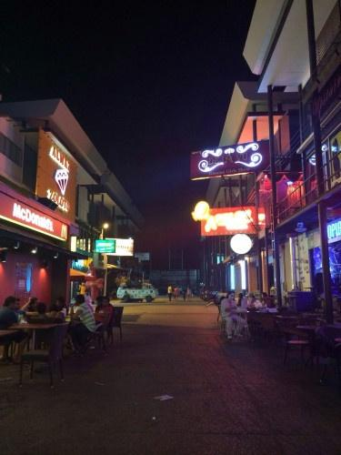 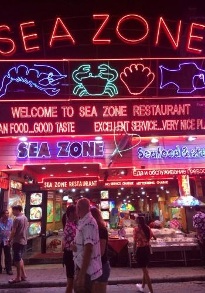人妖表演
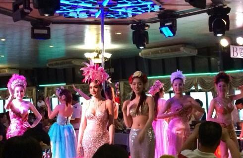因为泰国禁毒不禁黄，晚上的红灯区能看见各色夜店
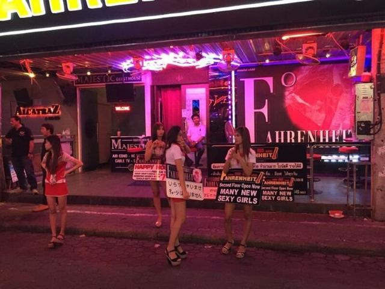 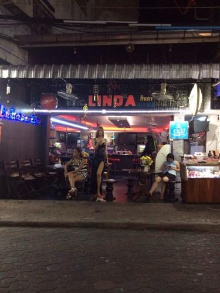 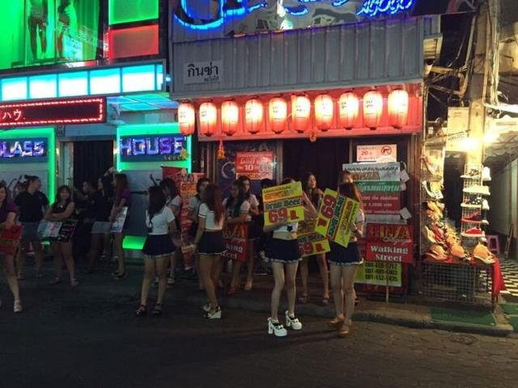不愧是男人的天堂，晚上的海边也有站街的妹子
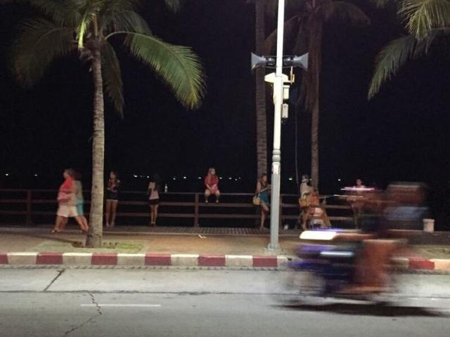告别了昨日的喧嚣，今天要去非常有特色的水上市场，《杜拉拉升职记》就是在这里取的景
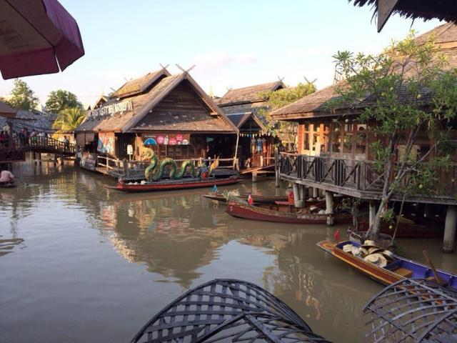 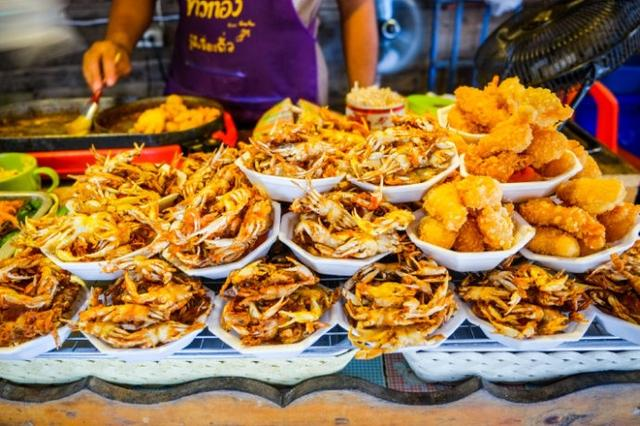 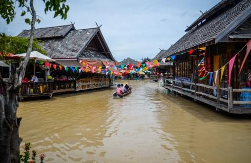 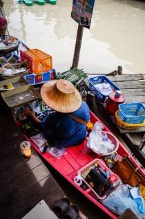晚上的水上市场也别有风味
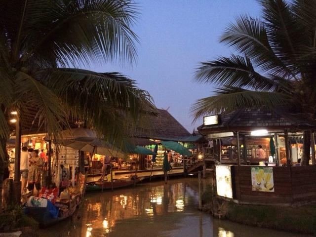 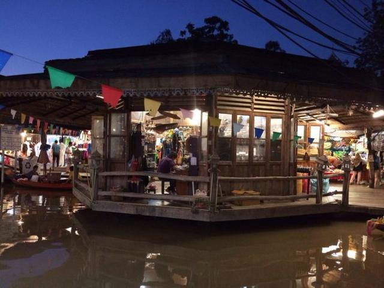玩了两天今天要去干正事了——看房。之前在国内被买房的起步价吓怕了，在芭提雅玩的时候，看到了房产中介，本来随口一聊，没想到这么便宜，还带精装修有家具家电。后来就约了个中介看看房子。
实景拍的照片：
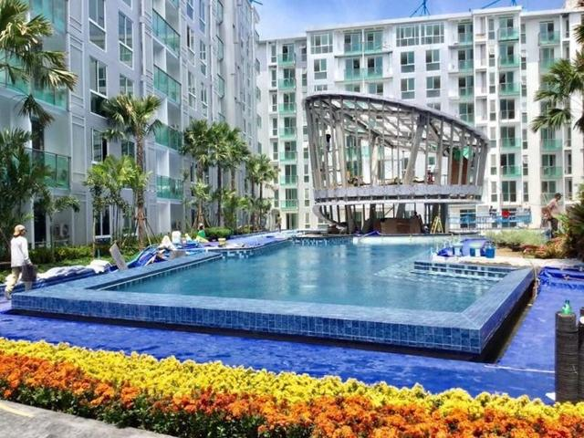 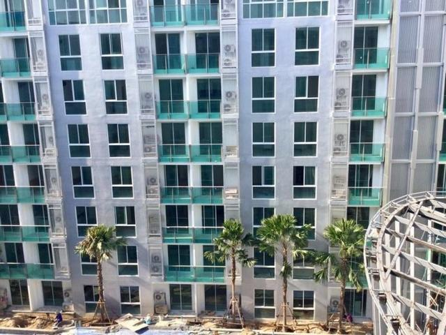 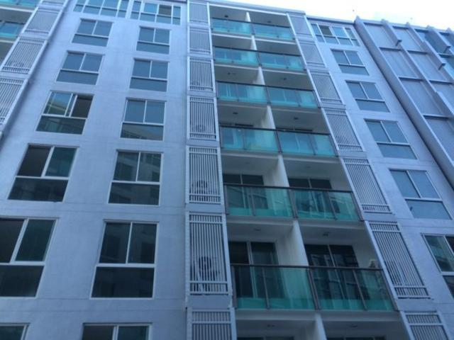 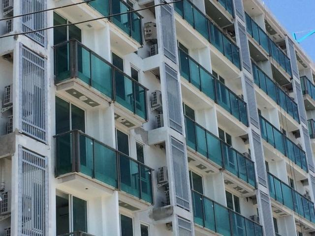泰国房子精装还带家电挺方便
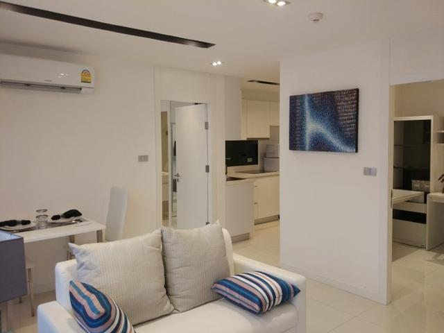 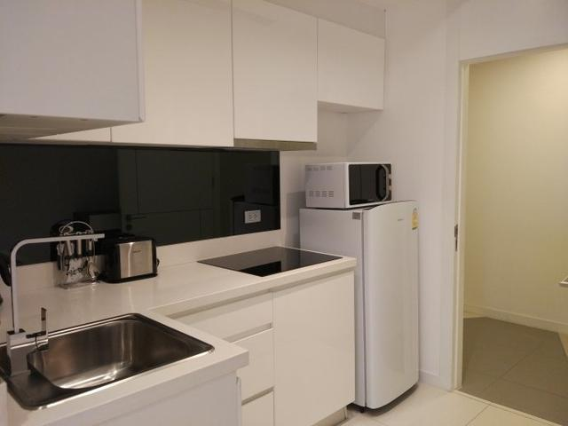 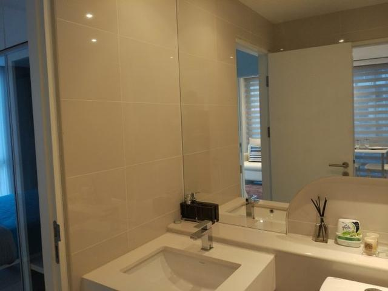 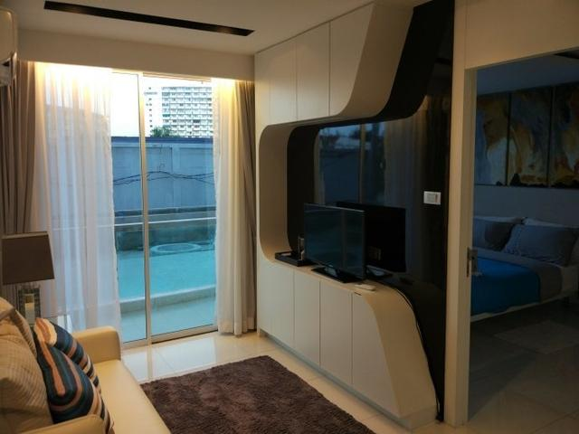在北京动不动就三五百万的房子跟这里一比差距还真是大，要是国内房子也这么便宜，生活质量一定能上一个台阶。这个项目在芭提雅中心区中心三路边上，周边配套挺齐全，主要是中心区已经开发完善，以后也没有地可开发，所以先占上一套准没错，哪里的房子都是市中心的最好，总价才45万人民币，听销售说还管出租，考虑再三决定投资一下。
第三天，看完了房子，今天自然要轻松一下了，咱就去苏梅岛转转
坐上快艇吹着海风真爽，这边收费明码标价不用担心被坑，走起走起！
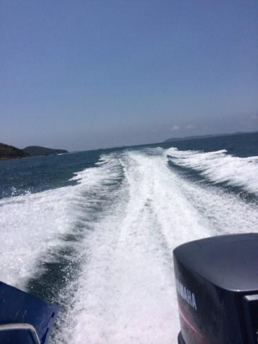天气不错，可能是压抑了太久，看见海让我心情舒畅很多。
看着就好爽
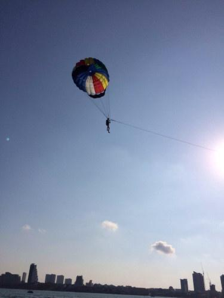人山人海海滩上早已经人山人海，阳光沙滩比基尼，哈哈哈
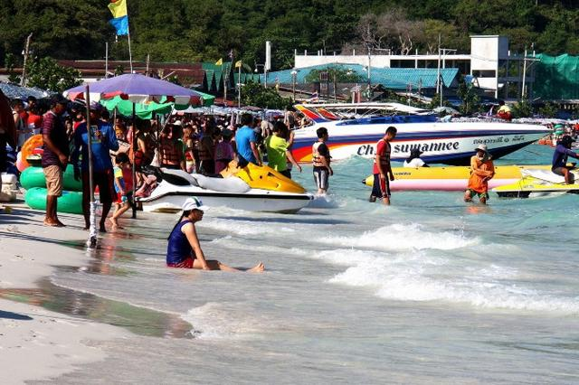游泳游累了，去买点水果吃，挺便宜，这边卖榴莲的特别多。合人民币5块钱左右，可惜吃不惯那玩意，没口福咯。
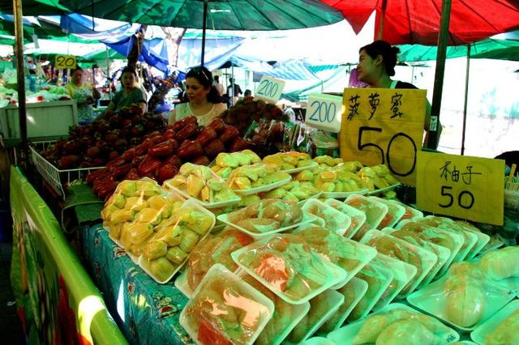水果摊找到了奇怪的东西，大家猜猜这是什么水果，话说我还是第一次见，想不想红鼻子
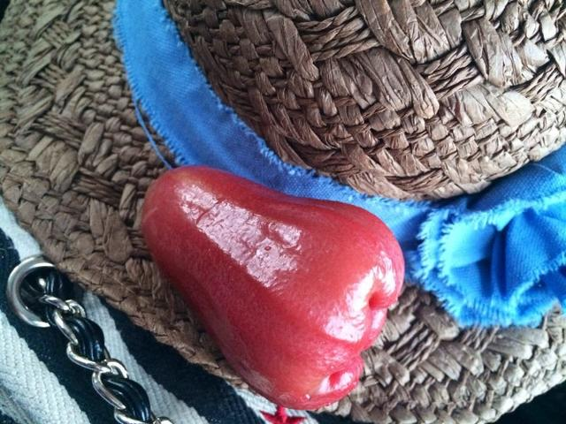问了问哥们，他说这叫莲雾，味道还不错 ，有机会可以试一下
玩累了再来顿烧烤，烤大虾。
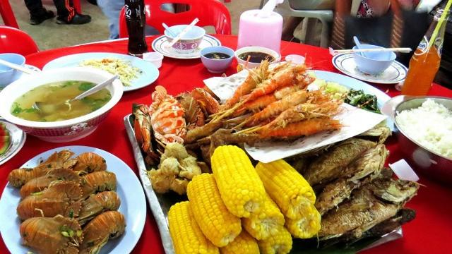芒果糯米饭，听好多人说过算是特色吃法吧
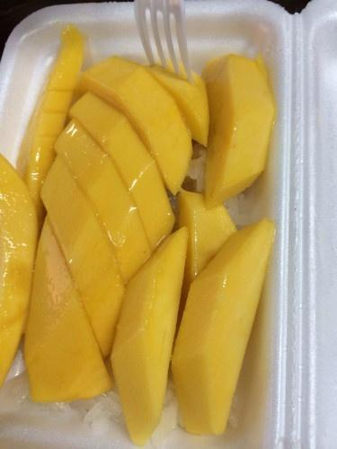最后踏上归途
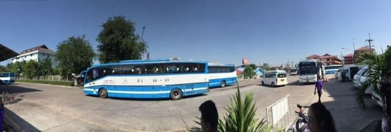总结一下，泰国是入门级的出国游，其多姿多彩的旅游节目和地缘因素吸引着大量中国游客，所到之处都是以中国游客为主的景点，很多时候都会不知不觉地以为在国内某处景点游玩，所以接触泰国人的机会不多，但是在芭提雅随处可见当地人洋溢在脸上的微笑，听朋友说泰国当地人月均收入只有2000左右，生活的依然很满足，跟他们比我们的生活水平要高很多却经常被各种烦恼困扰，或许这就是信仰的力量吧。